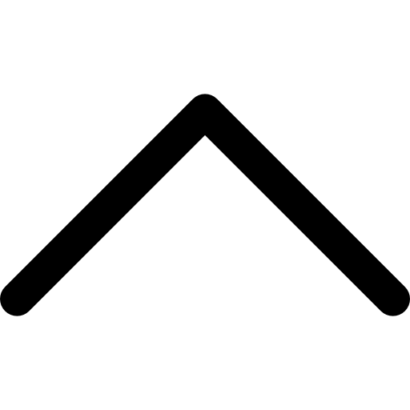

Demény Ágoston
PORTFÓLIÓ

Három éven át dolgoztam a kompozit csapat vezetőjeként a BME Formula Racing Team-ben. Tapasztalatot szereztem karbon kompozitok tervezésében és gyártásában, valamint projektmenedzsmentben egyetemi szinten, valódi mérnöki környezetben.

Versenyautó